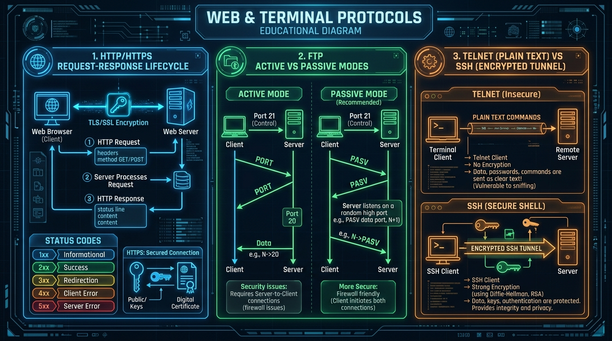

Master web communication (HTTP methods & status codes), TLS security (HTTPS), file transfer modes (FTP/TFTP), and remote access (Telnet vs SSH).
A URL (Uniform Resource Locator) specifies the exact address of a web resource on the World Wide Web.
https (specifies communication protocol).www.example.com (resolved to IP address by DNS).:443 (optional; default 80 for HTTP, 443 for HTTPS)./pages/index.html (path to target file on web server).?user=123 (key-value pairs sent to server).#section2 (client-side bookmark location).HTTP (Hypertext Transfer Protocol) is an application-layer, stateless, request-response protocol running over TCP (Port 80).
| HTTP Method | Purpose | Idempotent? | Safe? |
|---|---|---|---|
| GET | Retrieves data from server without altering state. | Yes | Yes |
| POST | Submits data to server to create a new resource. | No | No |
| PUT | Replaces an existing resource or creates it if non-existent. | Yes | No |
| DELETE | Removes specified resource from server. | Yes | No |
| PATCH | Applies partial modifications to a resource. | No | No |
| HEAD | Retrieves HTTP response headers only (no payload body). | Yes | Yes |
| Code Category | Status Code | Reason Phrase | Meaning & Description |
|---|---|---|---|
| 2xx Success | 200 OK | Success | Request succeeded; server returned requested data. |
| 2xx Success | 201 Created | Created | Request succeeded; new resource created successfully. |
| 3xx Redirection | 301 Moved | Moved Permanently | Resource permanently relocated to a new URL. |
| 3xx Redirection | 302 Found | Temporary Redirect | Resource temporarily located at another URL. |
| 4xx Client Error | 400 Bad Request | Bad Request | Server cannot process request due to malformed syntax. |
| 4xx Client Error | 401 Unauthorized | Unauthorized | Authentication required / invalid credentials. |
| 4xx Client Error | 403 Forbidden | Forbidden | Server understood request but refuses to authorize access. |
| 4xx Client Error | 404 Not Found | Not Found | Target resource does not exist on server. |
| 5xx Server Error | 500 Internal Error | Internal Server Error | Generic server-side error occurred while fulfilling request. |
| 5xx Server Error | 502 Bad Gateway | Bad Gateway | Server received invalid response from upstream gateway. |
| 5xx Server Error | 503 Unavailable | Service Unavailable | Server overloaded or down for maintenance. |

HTTPS (HTTP Secure) encrypts HTTP communication using **TLS (Transport Layer Security)** over **TCP Port 443**.
| Feature | HTTP | HTTPS |
|---|---|---|
| Port Number | TCP Port 80 | TCP Port 443 |
| Security | Plaintext (vulnerable to eavesdropping & MITM attacks) | Encrypted (TLS symmetric + asymmetric encryption) |
| Certificate Required | No | Yes (SSL/TLS Digital Certificate issued by CA) |
| Data Integrity | No checksum integrity checks | Digital Signature & Message Authentication Code (MAC) |
FTP uses two separate TCP connections (In-band control, Out-of-band data):
Active Mode vs Passive Mode:
A minimal, lightweight file transfer protocol using UDP Port 69. Does NOT support authentication, directory listing, or encryption. Used for booting diskless workstations (PXE boot) and flashing router firmware.
| Feature | Telnet | SSH (Secure Shell) |
|---|---|---|
| Port Number | TCP Port 23 | TCP Port 22 |
| Data Transmission | Unencrypted plain text (Passwords sent in cleartext) | Fully encrypted tunnel (AES/RSA/ECC cryptography) |
| Security Status | Obsolete & insecure | Industry standard for secure remote administration |
| Authentication | Basic username/password | Public key cryptography or password authentication |